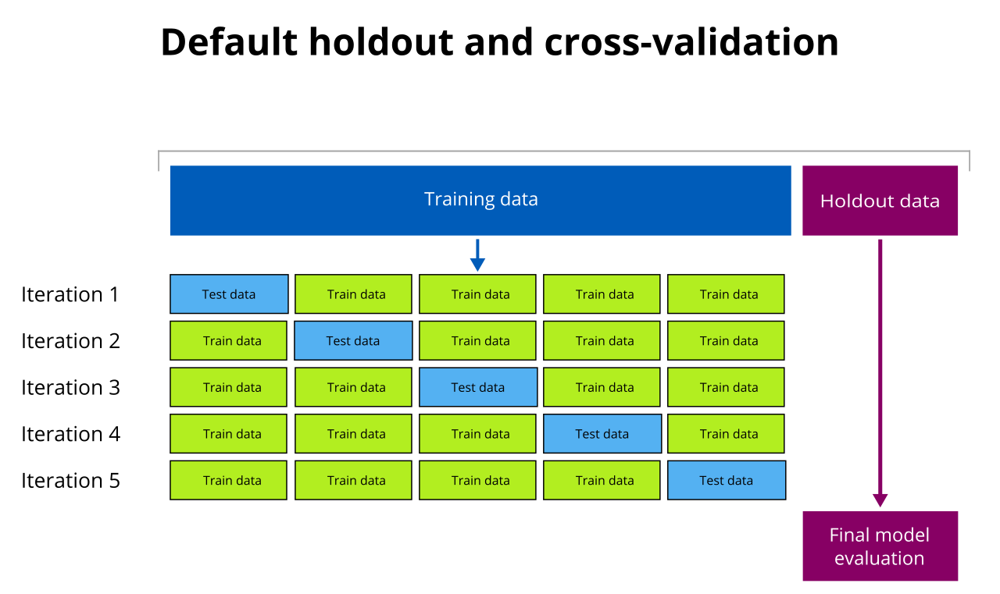
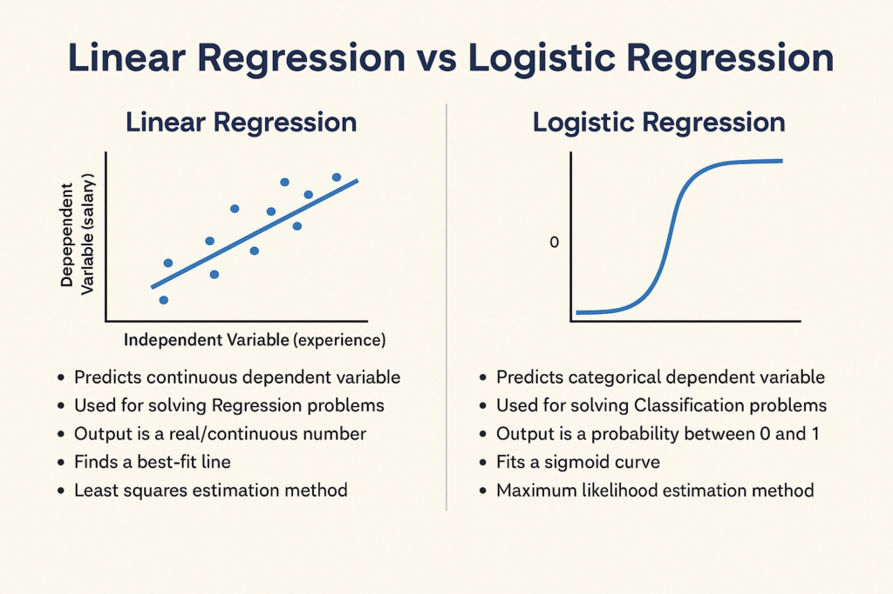
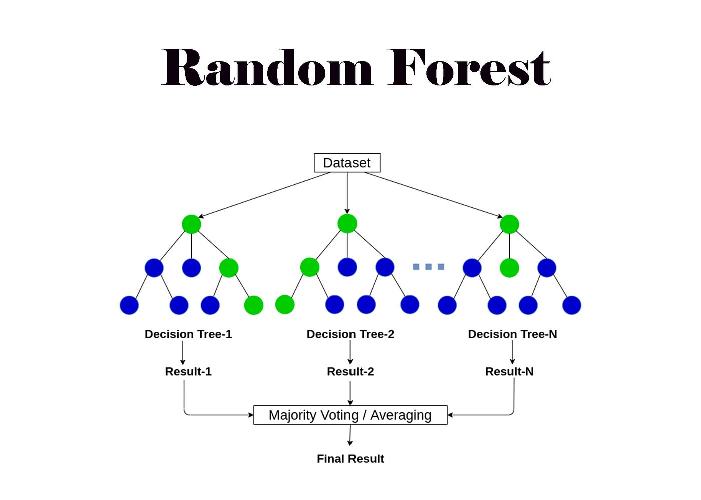
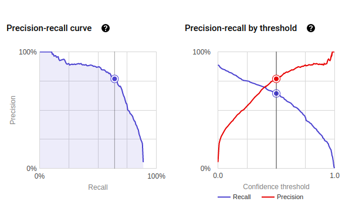
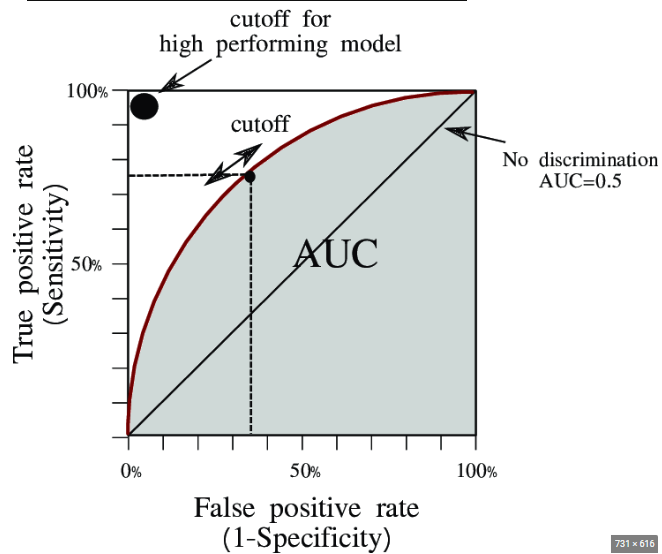
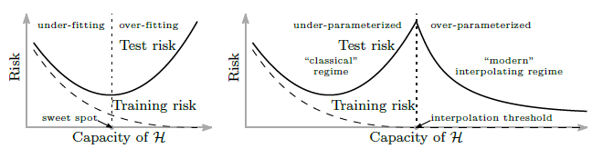

Model
A function that maps inputs to predictions.
Part 2
This is the "how models actually work" page. We keep the language direct, define terms quickly, and focus on practical intuition.
A function that maps inputs to predictions.
Values learned during training (like weights).
Settings you choose before training (like tree depth, learning rate).
How well the model performs on new, unseen data.
If you test a model on the same examples it studied, the score can look great for the wrong reason. You need unseen data to tell whether the model truly learned a pattern instead of memorizing.
Analogy: Memorizing practice questions is not the same as understanding the chapter.
Cross-validation rotates which fold is held out. This gives a more reliable estimate than one random split, especially in smaller datasets.
Analogy: Instead of one referee making the call, multiple referees rotate and you average their judgments.

Use this when your target is a number (price, demand, length of stay). It draws the best line through data to predict a continuous value.
Analogy: You are fitting a ruler through scattered dots so the average miss is as small as possible.
Basic form: y = b0 + b1*x1 + b2*x2 + ...
Use this for yes/no predictions. It returns a probability (like 0.82 chance of fraud) and then you choose a threshold to convert that probability into a decision.
Analogy: Think of a confidence meter. You decide at what confidence level to act.
Trees split data into branches using simple questions. They are very explainable, which is why people love them, but they can overfit when grown too deep.
Analogy: A medical triage flowchart with yes/no branches.
Random forest builds many trees and combines them. This often improves stability and accuracy compared to one tree.
Analogy: One doctor can miss something; a panel discussion is usually more reliable.


Here you do not have labels. You ask the model to find structure, such as clusters or compressed representations.
Analogy: You are sorting a box of mixed Lego pieces without any instructions.
In RL, an agent learns by acting and receiving rewards or penalties. The goal is long-term strategy, not just immediate reward.
Analogy: Learning chess by playing many games, not by being given perfect move labels.
Precision = of the things I flagged, how many were truly positive? Recall = of all true positives, how many did I catch? You usually trade one for the other by moving threshold.
Analogy: Spam filter: strict filter catches more spam (high recall) but may block good emails (lower precision).
ROC curve shows the tradeoff between true positive rate and false positive rate across thresholds. AUC summarizes how well the model ranks positives above negatives overall.
AUC near 0.5 means almost random ranking. AUC closer to 1.0 is stronger ranking ability.


Too simple: misses patterns (high bias). Too flexible: learns noise (high variance). You want the middle where model complexity matches data complexity.
Analogy: A suit can be too loose (bias) or too tailored to one posture (variance). Best fit is in-between.
This is how many models learn. Compute the slope of error and step downhill to reduce it. Learning rate controls step size.
Analogy: Hiking downhill in fog by feeling local slope with your feet.
Older intuition said "bigger model always overfits more." Modern behavior can show a second improvement region where larger models generalize better again, depending on data and optimization setup.
Do not treat this as a magic rule. It is a pattern seen in many modern settings, not all settings.
